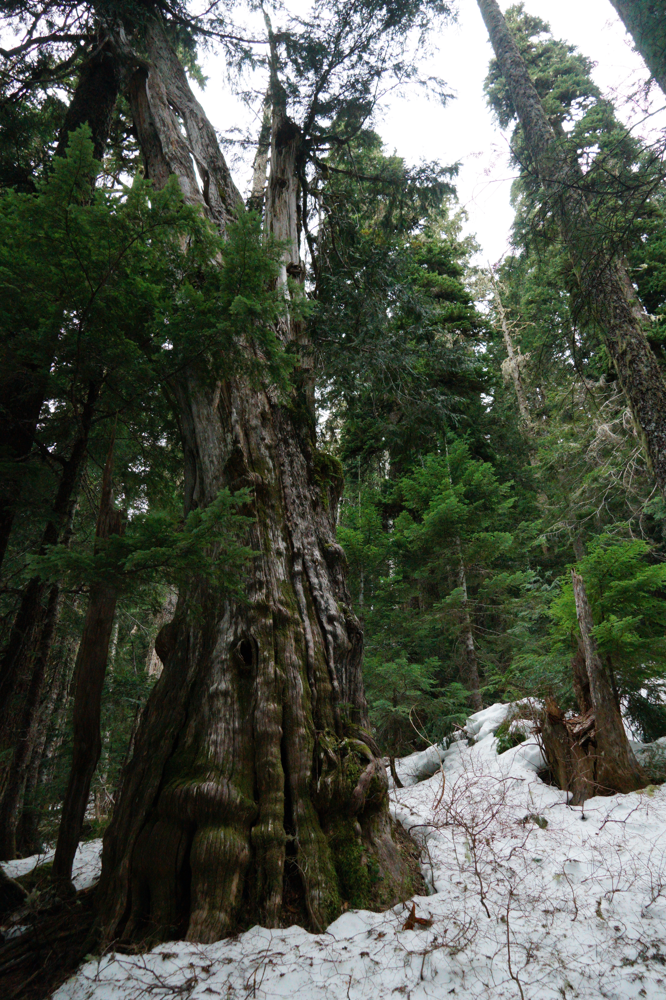
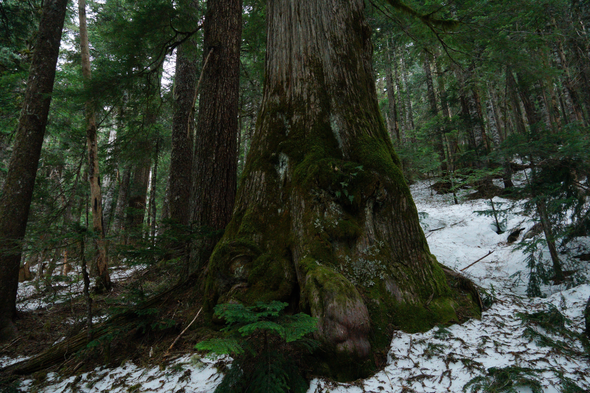
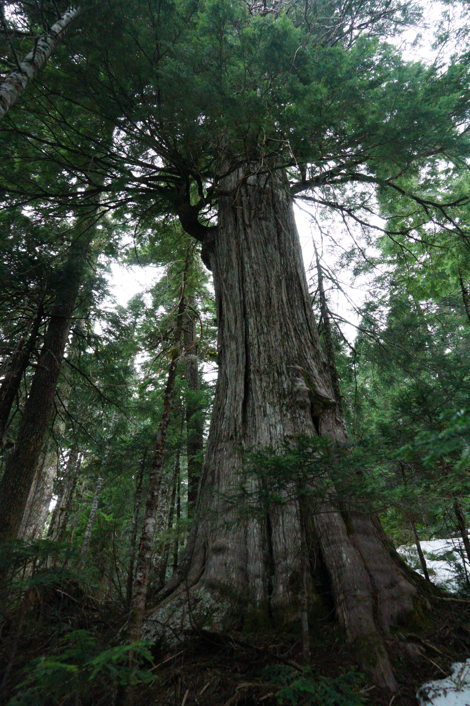

British Columbia, Canada
Connecting people and places in defense of BC's last ancient forests. We are watching, documenting, and fighting to protect what remains before it is gone forever.
Our Mission
Our Vision
To see an end to commercial logging of primary and old-growth forests by 2030 — and a just transition to sustainable forestry practices that serves both people and the land.
of BC's most productive
old-growth remains
years old — some trees
in BC's forests
species at risk depend
on old-growth habitat
our deadline to end
old-growth logging

BC old-growth forestWhy It Matters
Old-growth forests are not simply big trees. They are living ecosystems — intricate webs of fungi, lichen, salmon streams, spotted owls, and ancient cedar — that have taken centuries to develop and cannot be replaced in any human lifetime.
"You cannot log an old-growth forest and then grow it back. What is lost is lost forever."
Despite a 2020 government promise to defer logging of the most at-risk old-growth, industrial logging continues. Eyes on Old Growth exists to hold decision-makers accountable and ensure these promises become reality.
Read MoreHow We Work
We take a multi-pronged approach to protecting BC's ancient forests — building knowledge, growing the movement, and applying pressure where it matters most.
We share the science, history, and stakes of old-growth loss with the public, policymakers, and media to build an informed and engaged constituency.
We equip community members, Indigenous land defenders, and volunteers with the skills to monitor, document, and respond to logging activity on the ground.
We engage directly with government, industry, and the public — presenting evidence, demanding accountability, and pushing for binding protections.
We organize, mobilize, and disrupt the status quo. When dialogue fails, we escalate — through demonstrations, media campaigns, and civil action.
We develop and share tools, maps, reports, and guides that empower communities, journalists, and advocates with the information they need to act.
We stand behind those on the front lines — offering solidarity, legal referrals, and coordination to Indigenous nations and community groups protecting their territories.


Get Involved
There are many ways to make a difference — from writing to your MLA, to joining a monitoring patrol, to sharing the issue with people you know. Every action adds up.
Use our template to contact your Member of the Legislative Assembly and demand binding protection for at-risk old-growth stands.
Send a letter →Volunteer with our monitoring teams in the field. Document what's happening on the ground and help hold logging companies accountable.
Get involved →Share our content, follow us on social media, and help grow the movement. Awareness is the first step toward lasting change.
Share now →Support our advocacy, legal challenges, and on-the-ground monitoring work. Every dollar helps protect what little remains.
Donate →